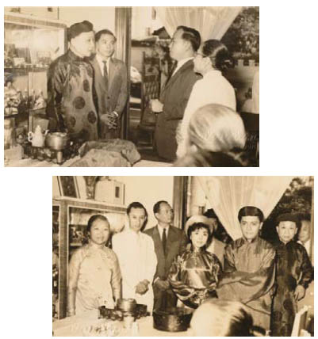

Jacob vẫn còn sống.
Dấu bướm ma đã biến mất và anh vẫn còn sống.
Bằng cách nào?
Hồng Tiên thét lên thịnh nộ trên mặt hồ nước nơi đã sinh ra nàng.
Không gì có thể phá vỡ lời nguyền quyền lực nhất của tiên. Nó mang cái chết đến cho bất cứ kẻ phàm trần nào. Họ sẽ bị xóa sổ như thể chưa từng tồn tại trên đời. Không điều gì khác có thể mang đến cho nàng sự bình yên. Hồng Tiên muốn kỷ niệm duy nhất khi nàng nhớ về anh là kỷ niệm về cái chết của anh.
Nhưng anh vẫn sống.
Hồ nước chuyển sang màu đen như bầu trời về đêm, và mặt nước cho cô thấy thứ vũ khí đã phá vỡ lời nguyền của chị gái nàng. Dễ dàng như bẻ gãy một nhánh cây mục.
Hồng Tiên bước lùi lại.
Gỗ cây trăn.
Dây cung làm bằng thủy tinh dẻo.
Hoa văn khắc trên cánh cung mạ vàng.
Không.
Bọn chúng đã biến mất. Từ lâu, rất lâu rồi.
Tất cả.
Bị tống khứ vào những cái cây mà tên chúng được đặt theo đó. Không một tên nào có thể thoát ra.
Hồng Tiên muốn quay mặt đi, nhưng một cái gì đó trồi lên mặt nước giữa những bông hoa lily. Nàng quỳ xuống bên bờ hồ và vươn tay về phía nó.
Đó là một tấm danh thiếp.
Một chiếc lá héo úa dính trên tấm danh thiếp trắng. Hồng Tiên hoảng hốt rụt tay lại.
Từ trước đến nay mùa đông chỉ tràn đến trên hòn đảo của nàng một lần duy nhất.
Không.
Bọn chúng đã biến mất.
Tất cả.